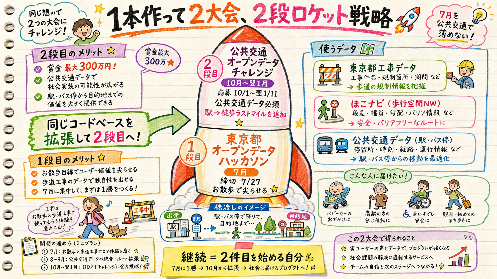

公共交通オープンデータチャレンジ2026は、東京都ハッカソンの「後」に応募期間が来る（10/1〜翌1/11）。競合しない。同じコードベースを拡張して連投すれば、継続・接続・大きい舞台が全部手に入る。「合体」ではなく「続編」で絡めるのが正解。

締切がずれているのが最大の追い風。
| 東京都オープンデータハッカソン | 公共交通オープンデータチャレンジ2026 | |
|---|---|---|
| 主催 | 東京都 | 公共交通オープンデータ協議会＋国交省 |
| 応募期間 | 〜2026/7/27 | 2026/10/1〜2027/1/11 |
| 必須データ | 東京都オープンデータ | 公共交通データ必須（鉄道/バス/デマンド/フェリー/航空/シェアサイクル） |
| 推奨データ | — | ほこナビ・Project LINKS・PLATEAU 等 |
| 賞 | 都知事杯 等 | 賞金総額 最大300万円＋特別賞 |
| 表彰 | — | 2027/2/20（東洋大学赤羽台） |
純粋なお散歩では公共交通要件を満たさない。だから駅・バス停を起点に足す。
ラストマイル徒歩アクセス：「駅・バス停で降りてから目的地まで」の徒歩区間を、ほこナビ歩行空間データ＋工事の歩道規制で安全案内する。交通弱者（車椅子・ベビーカー・視覚障害）が一番困るのは“駅からの徒歩”＝ここに公共交通データ（駅・バス停位置、到着情報）が自然に噛む。ODPTの必須要件をクリアしつつ、おさんぽセーフティの芯（歩道工事×歩行弱者）を保てる。
注意：ODPTの公共交通要件に引きずられて、7月の東京都応募まで公共交通を盛らないこと。7月は「お散歩×歩道工事」で尖らせる。公共交通は10月用の“2段目”として足す。合体させて両方を薄めるのが最悪手。
| 段 | 時期 | やること | データ |
|---|---|---|---|
| 1段目 東京都 | 〜7/27 | お散歩×歩道工事のコアを完成（地図＋簡易実踏記録＋リスク変換） | 東京都工事＋ほこナビ歩行空間 |
| 2段目 ODPT | 10/1〜翌1/11 | 駅・バス停ラストマイル徒歩アクセスを追加。同じエンジンを拡張 | ＋公共交通（駅/バス停） |
| その間 | 8〜9月 | X/note発信・GitHub整備・実施設ヒアリング（PoC反応見） | — |
実務メモ：Cを選んでも“2段目がありうる”前提でデータ層を「工事×歩道」と「公共交通」を疎結合に設計しておけば、後からODPT拡張が楽。＝実質Aの布石をCの顔で打てる。